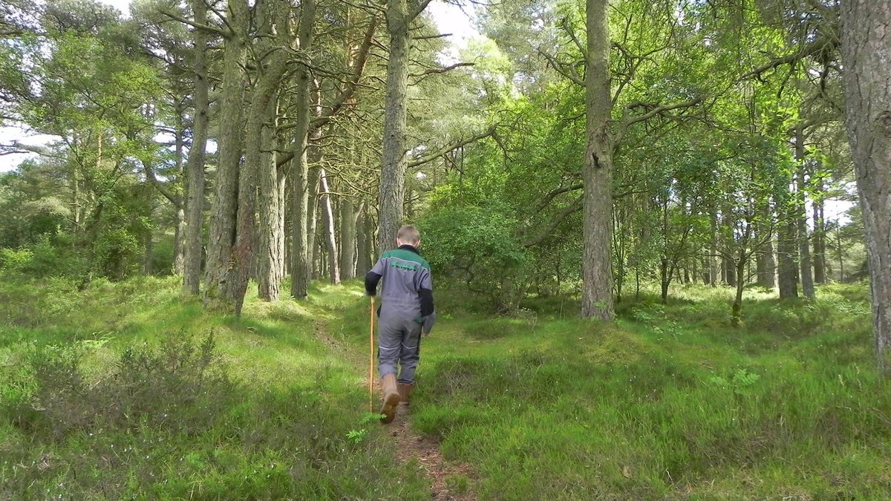
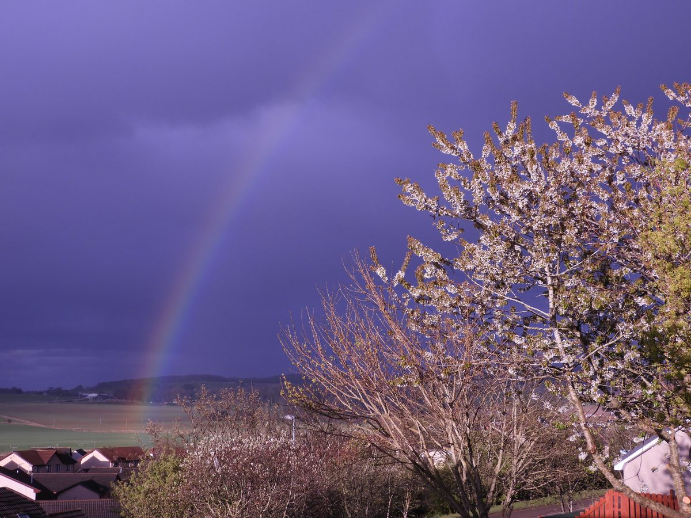
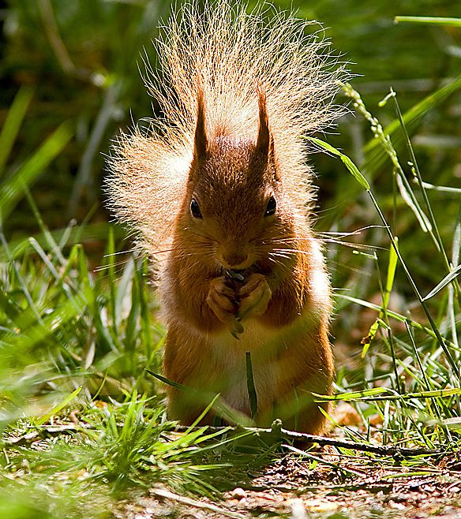

-

Walk the woods
The woodland is open to explore, with information boards at the entrances.
-

-


Fyvie · Aberdeenshire · SSSI
A wildlife sanctuary on the quartzite gravels of an ancient river-bed, looked after by the community that lives around it.
What we do
We preserve and maintain the Woodhead and Windyhills geological deposits and woodlands (it is a Site of Special Scientific Interest) and we promote access and interpretation amongst the local community and the wider population. We strive to protect and conserve the woodland’s special fauna and flora.
Founded in 2003, the Trust is a voluntary body representing the interests of the local community. The area is designated a Site of Special Scientific Interest because of the underlying quartzite gravels from an ancient river-bed.

The woodland is open to explore, with information boards at the entrances.
